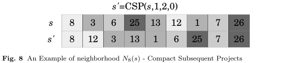

The neighborhood purpose is to compact or compress from a given project p and a given amount nP of subsequent projects in some direction dir.
To perform this process, it is necessary to receive as a parameter the allocations sequence S, a number of projects nP to be compressed on direction dir and the index of first project. Firstly, the nP subsequent projects are identified, when dir = 0 all subsequent projects are compacted starting the shift from right to left, otherwise the projects are compacted starting the shift from left to right. All jobs outside the subsequent projects that are in the range will be moved to after the last project adjacent allocated.
Figure 8 shows the movement made by this neighborhood. In this example, the method receives as parameter the first project 1 and the amount of projects 2, so this projects are compacted and placed in sequence without interference from jobs of other projects. The jobs of each project are colored in different shades of gray.
